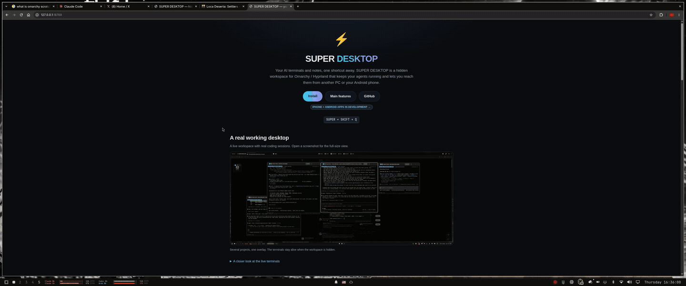
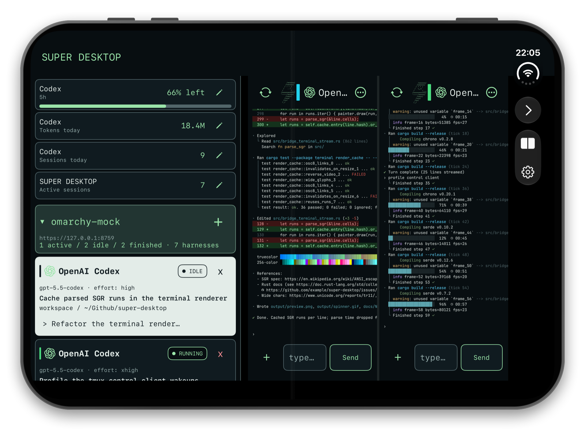
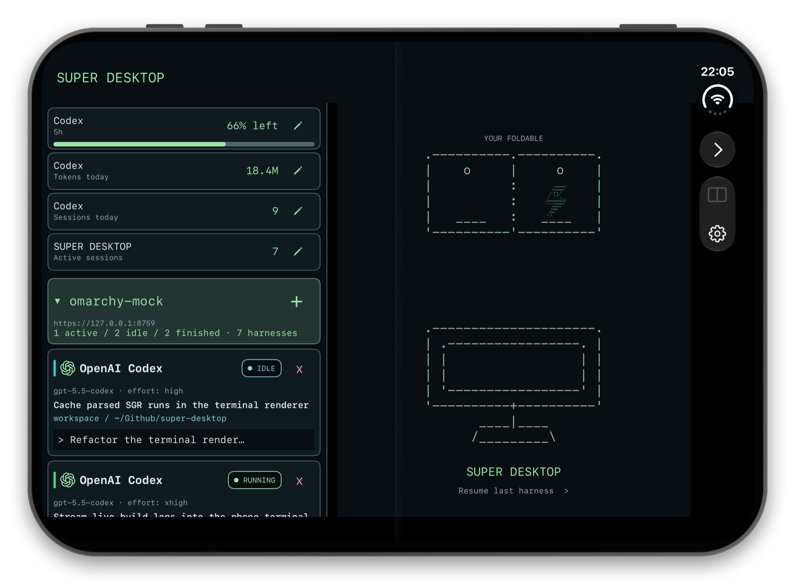
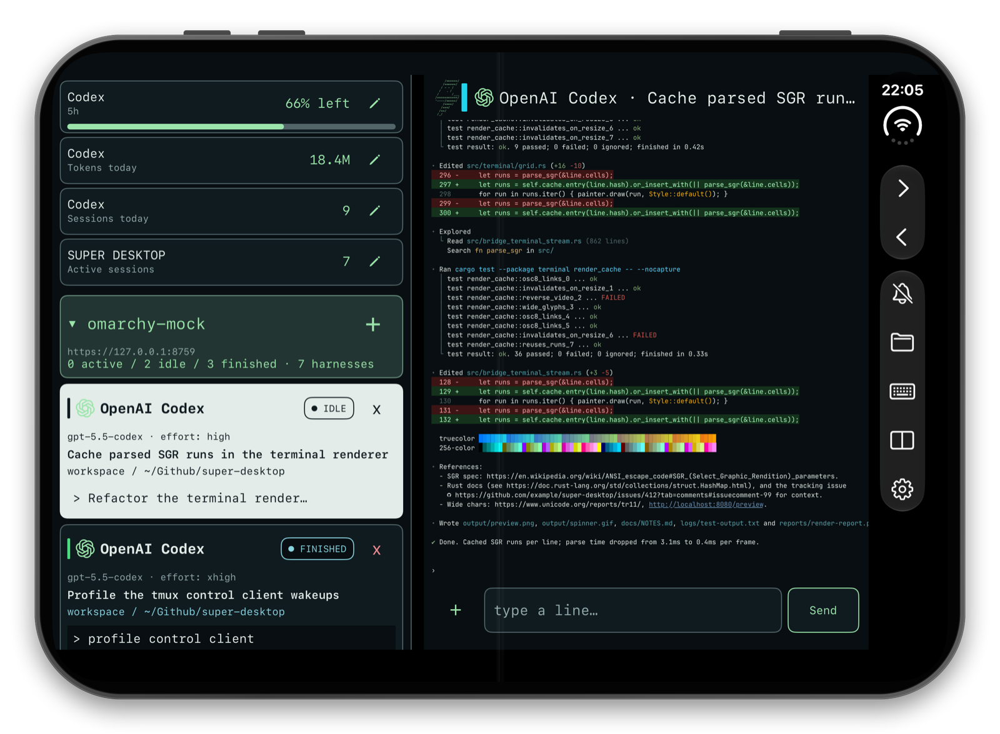

A real working desktop
Chrome stays underneath. One shortcut brings your live AI workspace into view.

{kind=link}
View the desktop screenshots


Install
Run this command in a terminal on your Omarchy machine, as your normal user.
curl -fsSL https://raw.githubusercontent.com/gladimdim/super-desktop/master/install.sh | bashNothing needs to be set up first. The installer adds the system packages it needs (it asks for your password once), installs Rust with rustup if you don't have it, then downloads, builds and installs SUPER DESKTOP. The first build takes several minutes.
Press SUPER + SHIFT + Q to open your workspace. To update later, run the same command again.
Full prerequisites and troubleshooting: installation guide.
Main features
Your agents keep running on every PC. Open them from any other PC or from your phone, directly and privately.
📱 Android + iPhone remote access
Open every session from your phone: live terminals, prompts with pictures and files, and completion alerts. Android is available now; the iPhone app is in development.
📖 Built for foldables
Unfold for two live terminals side by side next to your harness list, with layouts that follow every fold and resize. On Android today, coming to iPhone.
🖥️ All your PCs, connected
Pair as many PCs as you like. Each one can open any other's workspace, to watch and type into its sessions as if you were there.
🔒 No accounts, no servers
Your PCs and phones talk directly over your own network or Tailscale, encrypted and pinned to each device. Nothing to sign up for, no cloud in between.
⚡ Native and fast
Rust, GTK4 and tmux: no Electron, no web views. The workspace is there the moment you press the shortcut, and your agents keep running while it is hidden.
🤖 Use any harness
Every coding agent installed on the PC gets a one-click launcher.
 Claude Code
Claude Code
 Codex
Codex
 OpenCode
OpenCode
 Grok
Grok
 Antigravity
Pi
Aider
Reasonix
DeepSeek
Hermes
Goose
Qwen Code
Crush
Kimi
Kiro
Cursor Agent
Antigravity
Pi
Aider
Reasonix
DeepSeek
Hermes
Goose
Qwen Code
Crush
Kimi
Kiro
Cursor Agent
 Shell
Shell
🧩 Bring your own harness
Any other command-line agent: add it in ⚙ Settings → Harness launchers → Add a harness, and it gets the same launcher and live terminal card as the built-in ones.
Remote sessions — your other PCs live
Connect a second computer and its whole workspace opens inside your overlay. Every window becomes a live terminal, so you can watch and use that machine's sessions without getting up.
↔ Connect either way
Send a one-time connection link to another PC, or accept one from it. A single panel handles both directions, so either machine can be the one you look at.
🔐 You approve every PC
The same code appears on both screens and access is granted only after you confirm it on the computer being shared. Nothing connects behind your back.
🖥️ Their layout, your screen
Windows sit exactly where they do on the other computer — same sizes and stacking — laid out neatly to fit your display.
⌨ Type as if you were there
Click a window and start typing. Your keys, paste and Ctrl+C go straight to the session running on the other machine.
In three steps
- Share a connection link from one computer to the other.
- Check that the code matches on both screens and approve.
- The other PC's workspace opens and stays one click away.
Phone linking optional
Take your AI sessions with you. Pair an Android phone and it reaches your SUPER DESKTOP terminals over your own network, with everything kept private between your devices.
💻 Sessions in your pocket
See your running sessions on your phone and type into them, with the terminal's output and colours kept intact.
🔔 Know when it's done
Opt into completion alerts for Codex, Claude Code, Pi and OpenCode sessions. Delivery depends on your connection and Android background settings.
🖼️ Send pictures and files
Attach images and files to a prompt for any harness, or share them to SUPER DESKTOP from any other app.
⌨ Remote keys & saved drafts
Send Enter, arrows, Tab, paging keys, and Ctrl-C without sending your draft. Unsent text is saved separately for each session.
📂 Files & Links
Browse referenced images, PDFs, Markdown, and code, or open and copy links from the terminal output.
🔒 Pair once, revoke anytime
Pair by scanning a QR code and confirming the matching code on your desktop. Access can be taken away from any phone whenever you like.
iPhone + Android. Built for foldables.
Both companion apps are in active development: bring your desktop AI sessions to iPhone and Android, with full foldable support for both platforms as part of that work.
Android already supports adaptive layouts and two terminal panes on wide screens. The iOS app is being developed toward the same experience: layouts that adapt as you fold, unfold, and resize, with independent terminals and drafts. iOS and its foldable support are in development, not yet released.
The Android companion is available today and continues to evolve. Follow development in the project repository.
{kind=link}

{kind=link}

{kind=link}

iOS app in development, captured in the iPhone Duo simulator against a test bridge.